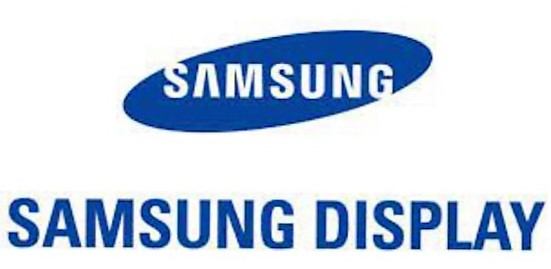

Tata Consultancy Services Pvt Ltd

Senior Assistant Engineer
Samsung Display Pvt Ltd |  |
Start: Dec, 2020 End: Dec,2021
-Worked as a Process Engineer to deal with new defects , Analysis and find Root cause , Provide Solution to get Good efficient of output and cutomer satisfaction
Assistant System Engineer
Tata Consultancy Services Pvt Ltd | |
Start: Dec, 2021 - Present
Member of Azure migration project team, mainly works on IPAAS platform tools like Azure logic apps, function apps, visual studio, Event hub, Event grid,etc..